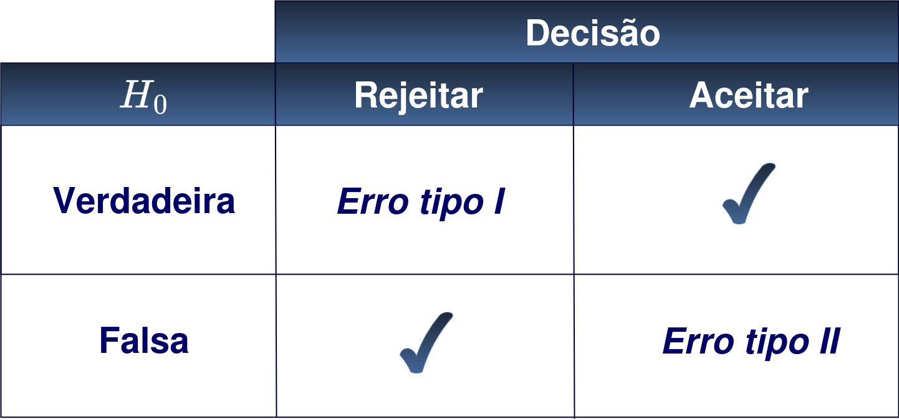
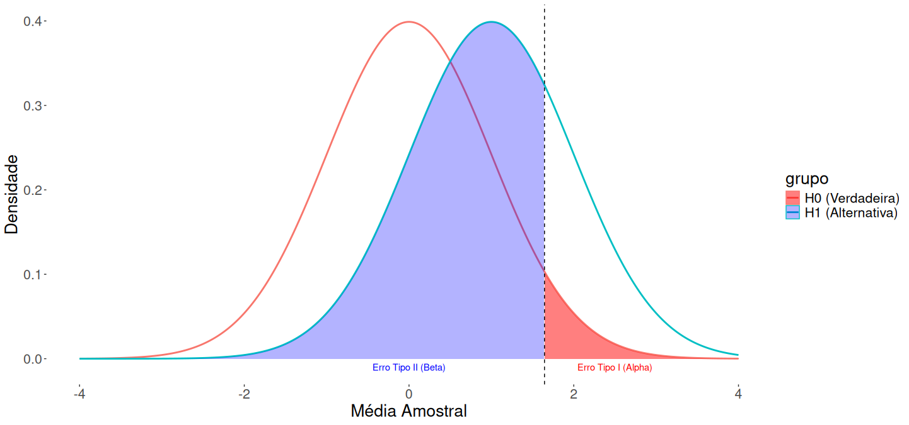
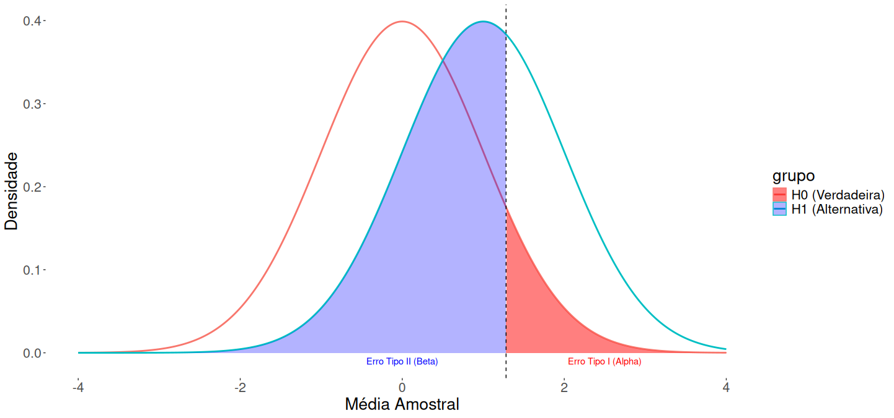

STA13823 - Inferência Estatística II
Testes de hipóteses
Última atualização: 13 abril, 2026
Testes de hipóteses
Ideia: A partir de um conjunto de observações \(X_1,X_2,\ldots,X_n\) gostariamos verificar se é aceitável (ou não) alguma informação sobre a distribuição de probabilidade conjunta da amostra. No caso da inferência paramétrica, queremos testar a validade de alguma afirmação (hipótese) sobre os parâmetros da distribuição conjunta.
Se \(\Theta\) é o espaço paramétrico, uma afirmação sobre \(\theta\) pode ser representada por \(\theta\in\Theta_0\), onde \(\Theta_0\subset\Theta\). Em outras palaras, suponha que observamos \(X_1,X_2,\ldots,X_n\) cuja distribuição conjunta envolve \(\theta\) e queremos, a partir desta informação, testar a hipótese
\[H_0: \theta\in\Theta_0.\]
Em geral, consideramos dois conjuntos \(\Theta_0\) e \(\Theta_1\), subconjuntos \(\Theta\), tal que \(\Theta_0\cap\Theta_1=\emptyset\) e desejamos verificar o que parece mais razoável
\[\begin{align*} H_0&:\theta\in\Theta_0 & \mathrm{ou} & & H_1&:\theta\in\Theta_1. \end{align*}\]
Definidas as nossas afirmações (hipóteses) a ideia é construir a partir de \(X_1,X_2,\ldots,X_n\) uma estatística \(u(X_1,X_2,\ldots,X_n)\) e uma regra de decisão \(C\), tal que se \(u(X_1,X_2,\ldots,X_n)\notin C\), então aceitaremos \(H_0\), porém se \(u(X_1,X_2,\ldots,X_n)\in C\) aceitaremos \(H_1\).
Observação
\(u(X_1,X_2,\ldots,X_n)\) é chamada de estatística de teste e \(C\) é chamada de região crítica. Dessa forma, construir um teste de hipótese é definir uma região crítica.
Definição 1 (Hipótese estatística) Uma hipótese estatística é quealquer afirmação sobre a distribuição de probabilidades de uma ou mais variáveis aleatórias.
Observação
No caso em que \(\Theta_0=\{\theta_0\}\) dizemos que \(H_0\) é simples, caso contrário, dizemos que \(H_0\) é composta.
Exemplo 1 Seja \(X_1,X_2,\ldots,X_n\) uma amostra aleatória de uma população com distribuição \(N(\theta, 25)\). Suponha que \(H_0:\theta\le17\). \(H_0\) definido dessa forma não especifica completamentea distribuição, dessa forma, \(H_0\) é composta.
Caso \(H_0:\theta=17\), a hipóstese é chamada de simples.
Exemplo 2 Seja \(X_1,X_2,\ldots,X_n\) uma amostra aleatória de uma população com distribuição \(N(\theta, 1)\) e temos interesse em testar a hipótese
\[\begin{align*} H_0&:\theta=75 & \mathrm{vs} & & H_1&:\theta>75. \end{align*}\]
Um possível teste seria baseado em \(\bar{X}_n\). Por exemplo, consideremos rejeitar \(H_0\) se \(\bar{X}_n>75\). Neste caso, \[c=\left\{(x_1,x_2,\ldots,x_n):x_1+x_2+\cdots+x_n>75n\right\}.\] Daí, a probabilidade de de rejeitar \(H_0\) é dada por
\[\begin{align*} \mathbb{P}\left[\bar{X}_n>75|\theta=75\right]&= \mathbb{P}\left[\sqrt{n}\left(\bar{X}_n-\theta\right)>\sqrt{n}\left(75-\theta\right)|\theta=75\right]\\ &=\mathbb{P}\left[\sqrt{n}\left(\bar{X}_n-\theta\right)>0|\theta=75\right]=\frac12. \end{align*}\]
Ou seja, o teste só dá uma probabilidade de \(\frac12\) para aceitar \(H_0\). Parece razoável que tenhamos uma probabilidade maior de acontecer \(H_0\) se ela for verdadeira.
Uma ideia é predefinir qual é a probabilidade de aceitar \(H_0\), dado que \(H_0\) é verdadeira, por exemplo, suponha que fixamos essa probabilidade em \(0.95\). Então, vamos procurar uma regra de decisão do tipo: Rejeitar \(H_0\) quando \(\bar{X}_n>C\).
Dessa forma,
\[\begin{align*} \mathbb{P}\left[\bar{X}_n>C|\theta=75\right]&=\mathbb{P}\left[Z>\sqrt{n}\left(c-75\right)\right]\\ &=1-\Phi\left(\sqrt{n}(c-75)\right)=0.05, \end{align*}\]
daí, \(\Phi\left(\sqrt{n}(c-75)\right)=0.95\) ou \(C=75+\frac{1.645}{\sqrt{n}}\).
Dessa forma, a regra de decisão é: Rejeitar \(H_0\) se \(\bar{X}_n>75+\frac{1.645}{\sqrt{n}}\).
Observação
A ideia de fixar um valor para a probabilidade de rejeitar \(H_0\) é bastante utilizada na prática.
Definição 2 Ao realizar o teste, se denomina erro tipo I à decisão de rejeitar \(H_0\), sendo \(H_0\) verdadeira, e erro tipo II à decisão de aceitar \(H_0\) sendo falsa.

Definição 3 Suponha que um teste estatístico é da forma
\[\begin{align*} H_0&:\theta\in\Theta_0 & \mathrm{vs} & & H_1&:\theta\in\Theta_1. \end{align*}\]
O tamanho do erro tipo I é definido como
\[\alpha=\sup_{\theta\in\Theta_0}\mathbb{P}_\theta(\textrm{rejeitar } H_0),\] onde \(\mathbb{P}_\theta\) indica a probabilidade quando o valor é \(\theta\).
Observação
\(\alpha\) é frequentemente chamado tamanho do teste e define-se como a maior chance de tomar uma decisão errada, assumindo verdadeiro qualquer valor do parâmetro \(\theta\) associado à hipótese nula.
Definição 4 O tamanho do erro tipo II é definido como
\[\beta=\sup_{\theta\in\Theta_1}\mathbb{P}_\theta(\textrm{aceitar } H_0).\]
Observação
Não é possível avaliar a gravidade de cometer o erro tipo I ou o erro tipo II. O cenário permitirá as implicações de tomar uma decisão errada.
Na prática, não é possível diminuir um tamanho de erro sem que aumentemos o outro.
Exemplo 3 Seja \(X_1,X_2,\ldots,X_n\) uma amostra aleatória de uma população com distribuição \(N(\theta,1)\). Suponha que queremos testar
\[\begin{align*} H_0&:\theta=0 & \mathrm{vs} & & H_1&:\theta=1. \end{align*}\]
Parece razoável utilizarmos o seguinte critério: Rejeitar \(H_0\) quando \(\bar{X}_n>C\).


Definição 5 (Poder) Considere um teste de hipótese sobre o parâmetro \(\theta\in\Theta\). Define-se a função poder do teste como a função
\[\pi:\Theta\longrightarrow[0,1],\] tal que, para cada \(\theta\in\Theta\), \(\pi(\theta)=\mathbb{P}_\theta(\textrm{rejeitar } H_0)\).
Assim, se \(u(X_1,X_2,\ldots,X_n)\) é uma estatística de teste e \(C\) um região crítica, então
\[\pi(\theta)=\mathbb{P}_\theta\left(u(X_1,X_2,\ldots,X_n)\in C\right).\]
Observação
O tamanho do teste ou nivel de significância ou tamanho do erro tipo I é dado por \(\alpha = \sup_{\theta\in\Theta}\pi(\theta)\).
A função de poder ideal seria
\[\begin{align*} \pi(\theta)= \begin{cases} 1, \text{ se } \theta\notin\Theta_0;\\ 0, \text{ se } \theta\in\Theta_0. \end{cases} \end{align*}\]
Exemplo 4 Seja \(X_1,X_2,\ldots,X_n\) uma amostra aleatória de uma população com distribuição \(N(\mu,\sigma^2)\), com \(\sigma^2\) conhecido.
Considere as hipóteses
\[\begin{align*} H_0&:\mu=0 & \mathrm{vs} & & H_1&:\mu>0. \end{align*}\]
Suponha que rejeitamos \(H_0\) se \(\bar{X}_n>C\), onde \(C\) é escolhido ao nivel de significância de \(5\%\). Daí, \(\mathbb{P}(\bar{X}_n>C|\mu=0)=0.05\) ou
\[\begin{align*} \mathbb{P}(\bar{X}_n<C|\mu=0)&=\mathbb{P}\left(\frac{\sqrt{n}\bar{X}_n}{\sigma}<\frac{\sqrt{n}C}{\sigma}|\mu=0\right)\\ &=\mathbb{P}\left(Z<\frac{\sqrt{n}C}{\sigma}|\mu=0\right)=0.95. \end{align*}\]
Daí, \(C=\frac{1.645\sigma}{\sqrt{n}}\).
Para calcular a função poder, note que
\[\begin{align*} \pi(\mu)&=\mathbb{P}_\mu\left(\bar{X}_n>C\right)=\mathbb{P}_\mu\left(\bar{X}_n>\frac{1.645\sigma}{\sqrt{n}}\right)\\ &=\mathbb{P}_\mu\left(\frac{\bar{X}_n-\mu}{\sigma/\sqrt{n}}>\left(\frac{1.645\sigma}{\sqrt{n}}-\mu\right)\frac{\sqrt{n}}{\sigma}\right)\\ &=\mathbb{P}_\mu\left(Z>1.645-\frac{\sqrt{n}\mu}{\sigma}\right)\\ &=1-\Phi\left(1.645-\frac{\sqrt{n}\mu}{\sigma}\right). \end{align*}\]
Dessa forma, quando \(n\longrightarrow\infty\), \(\pi(\mu)\longrightarrow1\).
Definição 6 Suponha \(\Theta\subset\mathbb{R}\). Uma hipótese \(H_0\) do tipo
\[\begin{align*} H_0&:\theta<\theta_0 & \mathrm{ou} & & H_0&:\theta>\theta_0 \end{align*}\]
é dita unilateral. Da mesma forma, um teste do tipo
\[\begin{align*} H_0&:\theta=\theta_0 & \mathrm{vs} & & H_0&:\theta>\theta_0 \end{align*}\]
dizemos que \(H_1\) é uma alternativa unilateral.
Definição 7 Suponha \(\Theta\subset\mathbb{R}\). Uma hipótese \(H_0\) do tipo
\[\begin{align*} H_0&:\theta=\theta_0 & \mathrm{vs} & & H_1&:\theta\ne\theta_0 \end{align*}\]
é dita bilateral.
Exemplo 5 Suponha que temos interesse em testar as hipóteses
\[\begin{align*} H_0&:\mu=\mu_0 & \mathrm{vs} & & H_1&:\mu\ne\mu_0, \end{align*}\]
onde \(\mu_0\) é algum valor pré-especificado. Neste caso, uma regra de decisão razoável parece ser a de rejeitar \(H_0\) se \(\left|\bar{X}_n-\mu_0\right|>d\), onde \(d\) deve ser escolhido de acordo com o tamanho do teste.
Por exemplo, ao nivel de \(\%5\), \(\mathbb{P}\left(\left|\bar{X}_n-\mu_0\right|>d\right)=0.05\) ou \(\mathbb{P}\left(\left|\bar{X}_n-\mu_0\right|<d\right)=0.95\).
Daí,
\[\mathbb{P}\left(\frac{\sqrt{n}}{\sigma}\left|\bar{X}_n-\mu_0\right|<d\frac{\sqrt{n}}{\sigma}\right)=\mathbb{P}\left(\left|Z\right|<d\frac{\sqrt{n}}{\sigma}\right).\] Então, \(d=\frac{1.96\sigma}{\sqrt{n}}\).
Portanto, ao nivel de \(\%5\), rejeitamos \(H_0\) se \(\left|\bar{X}_n-\mu_0\right|>\frac{1.96\sigma}{\sqrt{n}}\). Isso significa que não rejeitamos \(H_0\) se
\[\left|\bar{X}_n-\mu_0\right|<\frac{1.96\sigma}{\sqrt{n}}.\] Dessa forma,
\[\begin{align*} -1.96\frac{\sigma}{\sqrt{n}}\le\bar{X}_n-&\mu_0\le1.96\frac{\sigma}{\sqrt{n}}\\ \bar{X}_n-1.96\frac{\sigma}{\sqrt{n}}\le&\mu_0\le\bar{X}_n+1.96\frac{\sigma}{\sqrt{n}} \end{align*}\]
ou seja, não rejeitamos \(H_0\) se
\[\mu_0\in\left[\bar{X}_n-1.96\frac{\sigma}{\sqrt{n}};\bar{X}_n+1.96\frac{\sigma}{\sqrt{n}} \right].\]
Portanto, a regra de decisão pode ser definida como verificar se o valor sob teste pertence ao intervalo de confiança para o parâmetro. Ainda, a confiança do intervalo é igual \(1-\)tamanho do teste.
Da mesma forma, se \(\sigma\) é desconhecido, podemos testar
\[\begin{align*} H_0&:\mu=\mu_0 & \mathrm{vs} & & H_1&:\mu\ne\mu_0. \end{align*}\]
Neste cenário, verificamos se \(\mu_0\) pertence ao intervalo
\[\mu_0\in\left[\bar{X}_n-t_{n-1,\frac\alpha2}\frac{\hat\sigma}{\sqrt{n}};\bar{X}_n+t_{n-1, \frac\alpha2}\frac{\hat\sigma}{\sqrt{n}} \right],\]
onde \(\hat\sigma=\sqrt{\frac{\sum_{i=1}^n\left(X_i-\bar{X}_n\right)^2}{n-1}}\).
Política de proteção aos direitos autorais
O conteúdo disponível consiste em material protegido pela legislação brasileira, sendo certo que, por ser o detentor dos direitos sobre o conteúdo disponível na plataforma, o LECON e o NEAEST detém direito exclusivo de usar, fruir e dispor de sua obra, conforme Artigo 5o, inciso XXVII, da Constituição Federal e os Artigos 7o e 28o, da Lei 9.610/98. A divulgação e/ou veiculação do conteúdo em sites diferentes à plataforma e sem a devida autorização do LECON e o NEAEST, pode configurar violação de direito autoral, nos termos da Lei 9.610/98, inclusive podendo caracterizar conduta criminosa, conforme Artigo 184o, §1o a 3o, do Código Penal. É considerada como contrafação a reprodução não autorizada, integral ou parcial, de todo e qualquer conteúdo disponível na plataforma.
Material elaborado pela equipe LECON/NEAEST: Alessandro J. Q. Sarnaglia, Bartolomeu Zamprogno, Fabio A. Fajardo, Luciana G. de Godoi e Nátaly A. Jiménez.